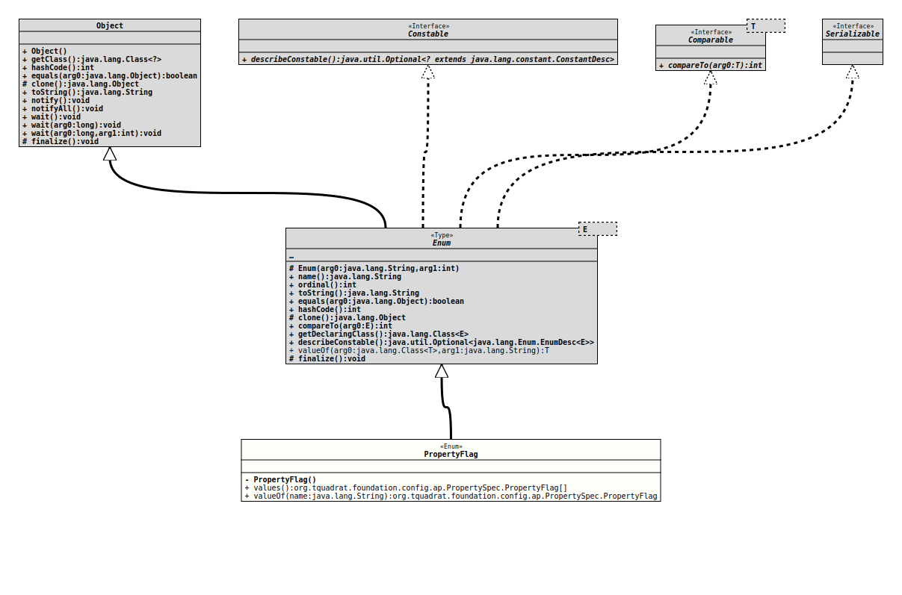

Enum Class PropertySpec.PropertyFlag
java.lang.Object
java.lang.Enum<PropertySpec.PropertyFlag>
org.tquadrat.foundation.config.ap.PropertySpec.PropertyFlag
- All Implemented Interfaces:
Serializable,Comparable<PropertySpec.PropertyFlag>,Constable
- Enclosing interface:
- PropertySpec
@ClassVersion(sourceVersion="$Id: PropertySpec.java 1010 2022-02-05 19:28:36Z tquadrat $")
@API(status=MAINTAINED,
since="0.1.0")
public static enum PropertySpec.PropertyFlag
extends Enum<PropertySpec.PropertyFlag>
The flags for a property.
- Author:
- Thomas Thrien (thomas.thrien@tquadrat.org)
- Version:
- $Id: PropertySpec.java 1010 2022-02-05 19:28:36Z tquadrat $
- Since:
- 0.1.0
- UML Diagram
-

UML Diagram for "org.tquadrat.foundation.config.ap.PropertySpec.PropertyFlag"
{kind=link}
-
Nested Class Summary
Nested classes/interfaces inherited from class java.lang.Enum
Enum.EnumDesc<E extends Enum<E>> -
Enum Constant Summary
Enum ConstantsEnum ConstantDescriptionIndicates that this property can be initialised from and persisted to anINIFile.Indicates that this property can be initialised from and persisted to a preference.Indicates that this property is initialised from the value of an environment variable.Indicates that this property will not be part of the map, in case the configuration bean implementsMap.Indicates that this property will not appear in the return value ofEnum.toString().Indicates that the getter method for this property is default.Indicates that the implementation ofMapwill refer to the getter for this property, instead of the field.Indicates that the getter method returns an instance ofOptionalholding the configuration value.Indicates that a value for this property is required on the command line.Indicates that it is possible to provide multiple values for this property on the command line.Indicates that the property can be initialised with a command line argument.Indicates that the property value can be modified.Indicates that the property can be initialised with a command line option.Indicates that the property is a 'special' property.Indicates that the access to the property requires synchronisation.Indicates that the setter method for this property should check for an empty argument.Indicates that the setter method for this property should check for a null argument.Indicates that the setter method for this property is default; this means that the method will not be implemented, and that there is no field for the property.Indicates that this property is initialised from the value of a system preference.Indicates that this property is initialised from the value of a system property. -
Constructor Summary
Constructors -
Method Summary
Modifier and TypeMethodDescriptionstatic PropertySpec.PropertyFlagReturns the enum constant of this class with the specified name.static PropertySpec.PropertyFlag[]values()Returns an array containing the constants of this enum class, in the order they are declared.
-
Enum Constant Details
-
ALLOWS_INIFILE
Indicates that this property can be initialised from and persisted to anINIFile. This also means that the methodsPropertySpec.getINIGroup()andPropertySpec.getINIKey()may not return empty. -
ALLOWS_PREFERENCES
Indicates that this property can be initialised from and persisted to a preference. This also means that the methodsPropertySpec.getPrefsAccessorClass()andPropertySpec.getPrefsKey()may not return empty. -
ENVIRONMENT_VARIABLE
Indicates that this property is initialised from the value of an environment variable. The methodPropertySpec.getEnvironmentVariableName()may not return empty.- See Also:
-
EXEMPT_FROM_MAP
Indicates that this property will not be part of the map, in case the configuration bean implements
Map.There is no related annotation for this flag, it is used mainly for special properties.
-
EXEMPT_FROM_TOSTRING
Indicates that this property will not appear in the return value ofEnum.toString(). -
GETTER_IS_DEFAULT
Indicates that the getter method for this property is default. This means that the method will not be implemented, and that there is no field for the property.
This flag implies
EXEMPT_FROM_MAP. -
GETTER_ON_MAP
Indicates that the implementation of
Mapwill refer to the getter for this property, instead of the field.There is no related annotation for this flag, it is used mainly for special properties.
-
GETTER_RETURNS_OPTIONAL
Indicates that the getter method returns an instance ofOptionalholding the configuration value. -
PROPERTY_CLI_MANDATORY
Indicates that a value for this property is required on the command line. -
PROPERTY_CLI_MULTIVALUED
Indicates that it is possible to provide multiple values for this property on the command line. -
PROPERTY_IS_ARGUMENT
Indicates that the property can be initialised with a command line argument. -
PROPERTY_IS_MUTABLE
Indicates that the property value can be modified. Basically, it means that there is a setter and/or an 'add' method for that property. -
PROPERTY_IS_OPTION
Indicates that the property can be initialised with a command line option. -
PROPERTY_IS_SPECIAL
Indicates that the property is a 'special' property. This also means thatPropertySpec.getSpecialPropertyType()will not return an empty value. -
PROPERTY_REQUIRES_SYNCHRONIZATION
Indicates that the access to the property requires synchronisation. -
SETTER_CHECK_EMPTY
Indicates that the setter method for this property should check for an empty argument. -
SETTER_CHECK_NULL
Indicates that the setter method for this property should check for a null argument. -
SETTER_IS_DEFAULT
Indicates that the setter method for this property is default; this means that the method will not be implemented, and that there is no field for the property. -
SYSTEM_PREFERENCE
Indicates that this property is initialised from the value of a system preference. The methodsPropertySpec.getSystemPrefsPath(),PropertySpec.getPrefsKey()andPropertySpec.getPrefsAccessorClass()may not return empty. -
SYSTEM_PROPERTY
Indicates that this property is initialised from the value of a system property. The methodPropertySpec.getSystemPropertyName()may not return empty.- See Also:
-
-
Constructor Details
-
PropertyFlag
private PropertyFlag()
-
-
Method Details
-
values
Returns an array containing the constants of this enum class, in the order they are declared.- Returns:
- an array containing the constants of this enum class, in the order they are declared
-
valueOf
Returns the enum constant of this class with the specified name. The string must match exactly an identifier used to declare an enum constant in this class. (Extraneous whitespace characters are not permitted.)- Parameters:
name- the name of the enum constant to be returned.- Returns:
- the enum constant with the specified name
- Throws:
IllegalArgumentException- if this enum class has no constant with the specified nameNullPointerException- if the argument is null
-